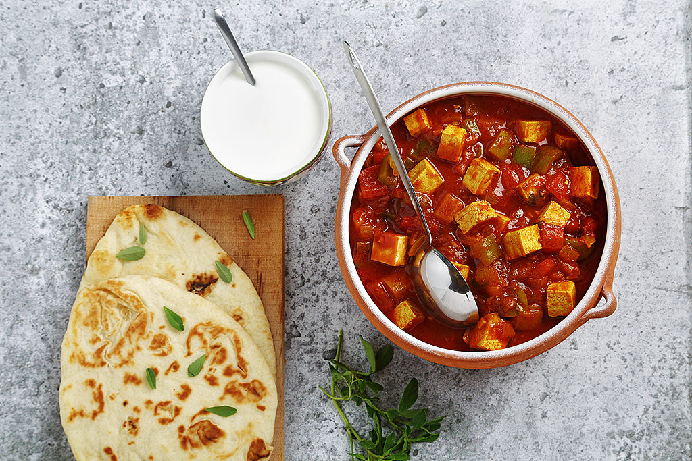

Mapo Tofun (Indian Style)

Description
Delicious mapo tofun (Indian-style). After creating the tofun you will be able to get all the ladies.
Ingredients
- DOUBANJIANG
- Green onions
- Soy Sauce
- minced chicken breast
- tofu from foodymart
- shaoxing wine
- garlic
- throw in chicken breast with garlic to wok or pan
- stir fry until breast cooked
- add in sauces (to taste) and tofu
- let simmer and stir fry a bit more after
- garnish with green onions and it's lit
- serve with side of delicious naan bread